1. AI 판단 시나리오와 Human Gate의 정의
AI 판단 시나리오는 AI가 현장의 데이터와 Evidence를 바탕으로 상황을 해석하고, 판단 결과와 다음 행동을 추천하는 구조입니다. YABOAZ에서 AI는 조직의 최종 책임자를 대체하지 않고 판단을 보조합니다.
AI는 제안하고, 사람은 승인하며, 시스템은 실행하고, 결과는 기록한다.
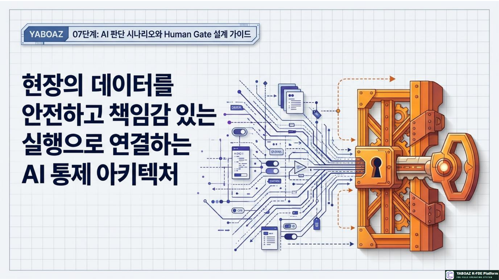
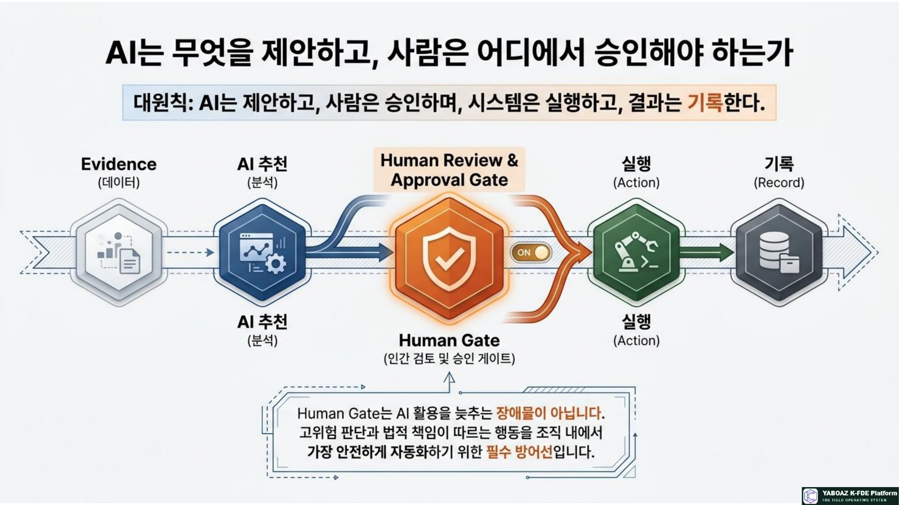
2. 07단계의 위치와 입력·산출물
입력 자료
| 입력 | 활용 |
|---|---|
| 문제정의서·KPI | AI가 해결할 판단 문제와 성과 기준을 확인합니다. |
| Evidence·Discovery·인터뷰 | 판단 근거, 실제 병목, 사람의 기준과 예외를 확인합니다. |
| 온톨로지 7요소 | 객체·상태·이벤트·규칙·행동을 판단 구조에 연결합니다. |
| 데이터·보안·권한 정책 | 사용 가능한 입력과 승인권한, 금지 범위를 결정합니다. |
핵심 산출물
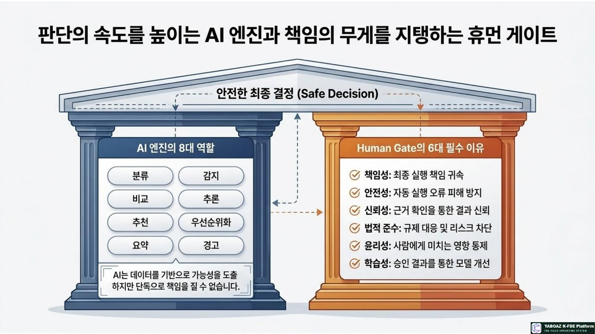
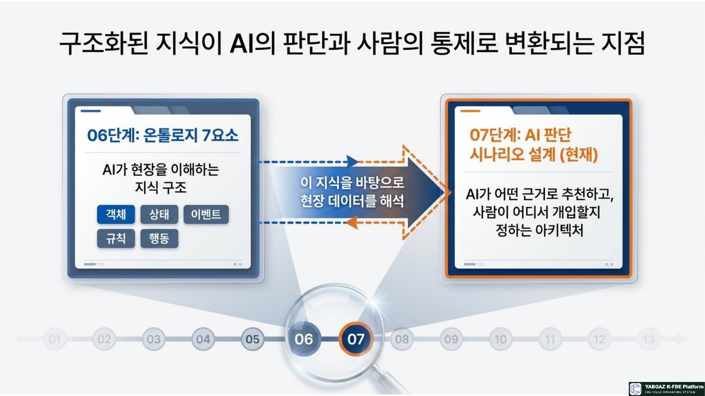
3. 설계 전체 흐름 10단계
판단 대상 선정
반복성, 시간 영향, 데이터 가능성, 기준화 가능성, 위험 통제, KPI 연결성을 기준으로 선정합니다.
판단 질문 작성
무엇을 판단하는지, 답변이 어떤 행동으로 이어지는지 질문형으로 작성합니다.
입력 데이터 정의
객체·속성·관계·상태·이벤트·규칙·이력과 출처·최신성·필수 여부를 정의합니다.
판단 기준과 근거 정의
규칙, 점수, 임계값, 이력, 전문가·정책 기준과 연결 Evidence를 지정합니다.
출력 결과 정의
판단 결과, 추천 행동, 근거, 신뢰도, 대안, 리스크, 승인자를 구조화합니다.
위험도 분류
자동 처리, 사람 검토, 승인 필수, AI 금지 영역으로 나눕니다.
Human Gate 조건 설계
승인자, 대체 승인자, 판단 화면, 제한 시간, 자동 전환과 감사 로그를 설계합니다.
금지 판단·예외 정의
법률·생명안전·의료·인사·금융 등 금지 영역과 데이터 부족·충돌·오류 처리 방식을 정합니다.
평가 기준 설계
정확도, 수정률, 승인률, 처리시간, 오류율, 채택률, KPI 개선도를 정합니다.
워크플로·MVP 연결
AI 추천이 Human Gate와 실행 행동, 결과 기록, MVP 범위로 이어지도록 연결합니다.
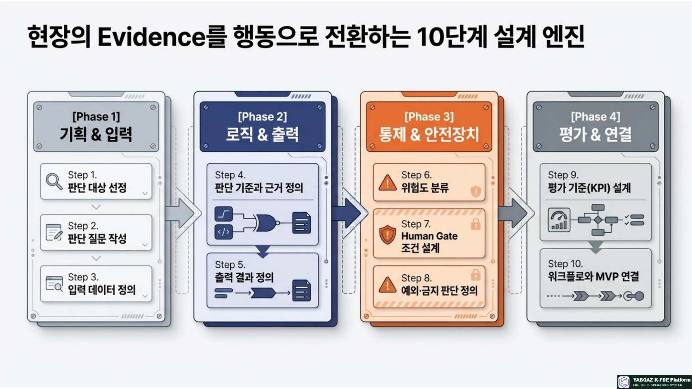
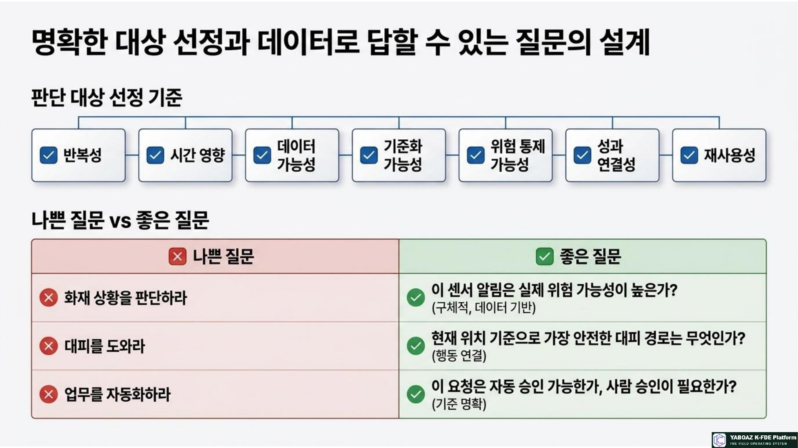
4. 판단 질문·입력·근거 설계
좋은 판단 질문
| 나쁜 질문 | 좋은 질문 | 행동 연결 |
|---|---|---|
| 화재 상황을 판단하라 | 이 센서 알림은 실제 위험 가능성이 높은가? | 관리자 승인 요청 |
| 대피를 도와라 | 현재 위치 기준 가장 안전한 대피 경로는 무엇인가? | 승인 후 안내 발송 |
| 고객을 분석하라 | 이 문의는 긴급 처리 대상인가? | 우선순위 배정 |
| 업무를 자동화하라 | 이 요청은 자동 승인 가능한가, 사람 승인이 필요한가? | 승인 경로 분기 |
입력 데이터 정의표
| 판단 질문 | 입력 데이터 | 출처 | 품질 조건 |
|---|---|---|---|
| 위험도가 높은가 | 센서값, 위치, 주변 센서, 오경보 이력 | 센서 시스템·Evidence | 실시간·원본 추적 |
| 안전 경로는 무엇인가 | 구역 상태, 경로 상태, 인원, 혼잡도 | 공간 DB·현장 기록 | 최신·관계 연결 |
| 승인이 필요한가 | 위험도, 영향 범위, 업무 규칙 | 온톨로지·정책 | 검증·승인된 기준 |
판단 근거 정의
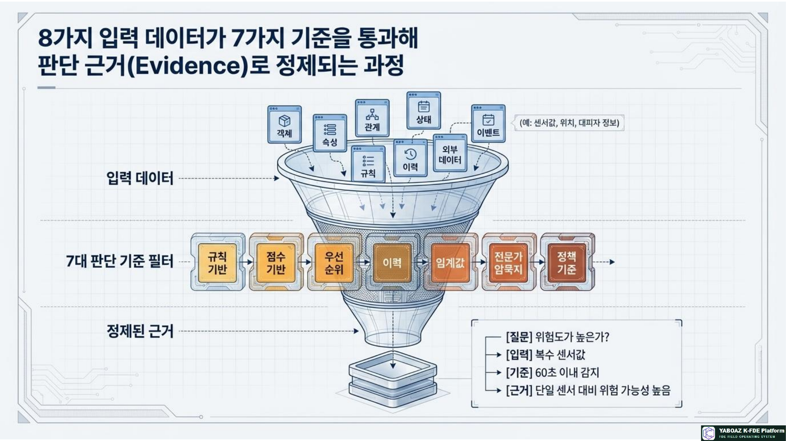
5. 위험도 분류와 Human Gate
| 등급 | 의미 | 처리 방식 | 예시 |
|---|---|---|---|
| Level 1 · 낮음 | 실패 영향이 낮고 되돌릴 수 있음 | AI 자동 추천·제한적 자동 실행 | 문서 유형 분류, 검색·요약 |
| Level 2 · 중간 | 업무 영향이 있으나 검토 가능 | 사람 검토 후 실행 | 담당자 추천, 우선순위 초안 |
| Level 3 · 높음 | 안전·금전·권리에 영향 | Human Gate 승인 필수 | 대피 안내 발송, 경로 차단 |
| Level 4 · 금지 | AI 단독 판단이 허용되지 않음 | AI 최종 판단·자동 실행 금지 | 생명안전 최종결정, 의료진단 |
Human Gate 설계표
| AI 추천 | 승인 조건 | 승인자 | 승인 화면 정보 | 승인 후 행동 |
|---|---|---|---|---|
| 대피 안내 발송 | 위험도 높음 | 안전관리자 | 근거·경로·대상·대안 | 알림 발송 |
| 경로 차단 | 연기 감지·위험 구역 연결 | 관리자 | 차단 이유·대체 경로 | 경로 제외·재추천 |
| 우선 알림 대상 | 취약자 정보 사용 | 안전담당자 | 위치·위험도·대상 근거 | 개별 안내 |
승인 화면에는 AI 추천, Evidence ID, 판단 규칙, 신뢰도, 대안, 위험, 승인·반려·수정·보류 버튼과 승인 사유를 함께 표시합니다.
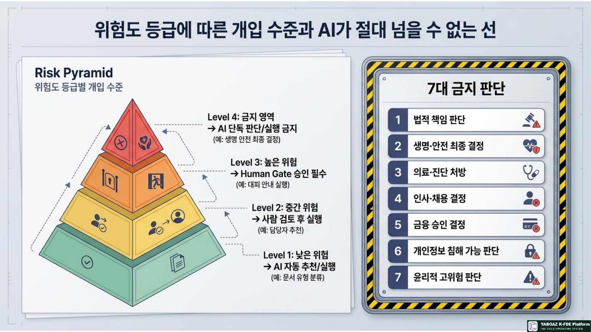
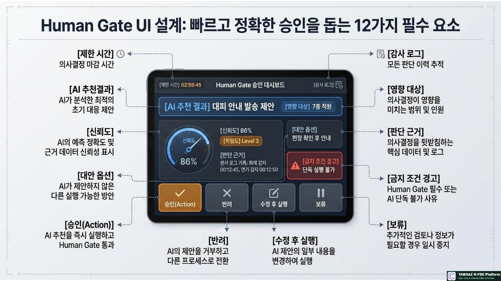
6. 금지 판단과 예외 처리
금지 판단
예외 처리표
| 예외 | 조건 | 처리 | 기록 |
|---|---|---|---|
| 입력 데이터 부족 | 필수 필드 누락 | 판단 보류·사람 검토 요청 | 누락 데이터 로그 |
| 데이터 충돌 | 자료 간 값·규칙 불일치 | 충돌 표시·승인자 판단 | 충돌·결정 로그 |
| 신뢰도 낮음 | 기준값 미만 | 자동 실행 금지·승인 필수 | 신뢰도 로그 |
| 승인자 부재 | 제한 시간 초과 | 대체 승인자·에스컬레이션 | 호출·응답 기록 |
| 시스템 오류 | 연동·모델 장애 | 수동 절차로 전환 | 장애·복구 기록 |
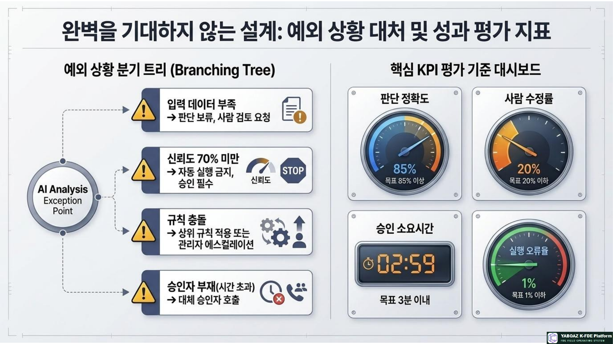
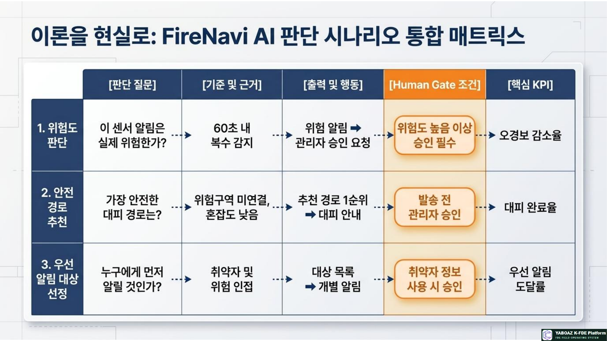
7. 평가 KPI와 워크플로·MVP 연결
판단 결과 평가
| 지표 | 의미 | FireNavi 예시 목표 |
|---|---|---|
| 판단 정확도 | AI 판단과 실제 결과의 일치율 | 85% 이상 |
| 사람 수정률 | 승인자가 추천을 수정한 비율 | 20% 이하 |
| 승인률 | AI 추천이 승인된 비율 | 70% 이상 |
| 승인 소요시간 | 추천부터 승인까지 걸린 시간 | 3분 이내 |
| 실행 오류율 | 잘못된 추천·발송·기록의 비율 | 1% 이하 |
| 채택률·KPI 개선 | 현장 사용과 실제 업무성과 변화 | 반복 사용·대응시간 개선 |
워크플로 연결
| 이벤트 | AI 추천 | Human Gate | 행동 | 기록 |
|---|---|---|---|---|
| 센서 감지 | 위험도·오경보 가능성 | 고위험이면 관리자 확인 | 위험구역 표시 | 판단 로그 |
| 위험 확인 | 안전 경로·우선 대상 | 대피 안내 승인 | 알림 발송 | 승인·발송 로그 |
| 경로 차단 | 대체 경로 추천 | 수정·승인 | 경로 업데이트 | 경로 변경 로그 |
AI 판단 시나리오 카드
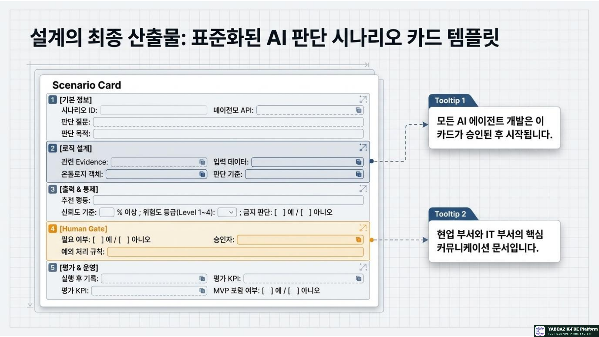
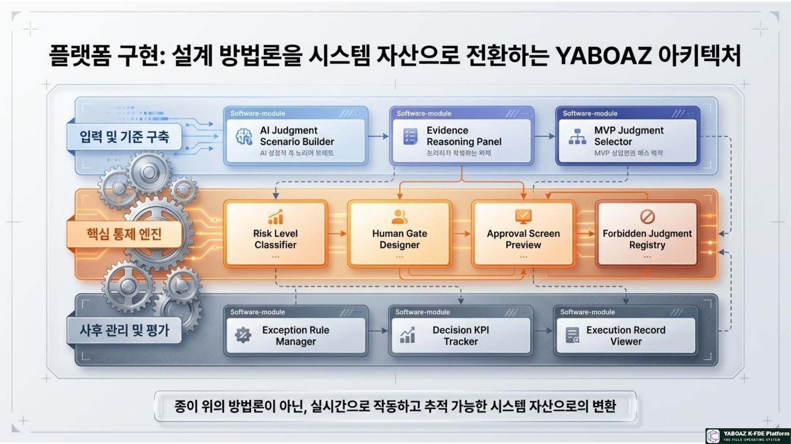
8. FireNavi 실습과 단계 완료 기준
실습 시나리오
화재 센서가 7층 복도에서 감지되고, 관제 화면에는 센서 ID만 표시됩니다. AI는 위험도와 안전 경로를 추천하고, 관리자는 근거를 검토한 뒤 대피 안내를 승인합니다.
실습 산출물
07단계 완료 체크리스트
온톨로지와 Evidence를 AI 판단 질문으로 전환하고, 신뢰도·근거·위험을 표시하며, Human Gate를 거쳐 안전한 행동과 KPI 검증으로 연결하는 것입니다.
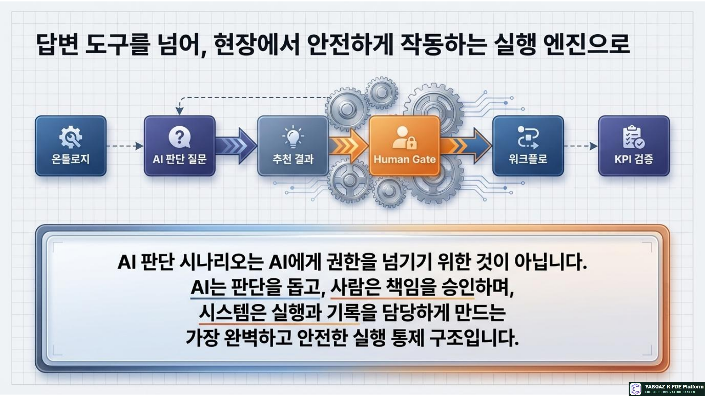